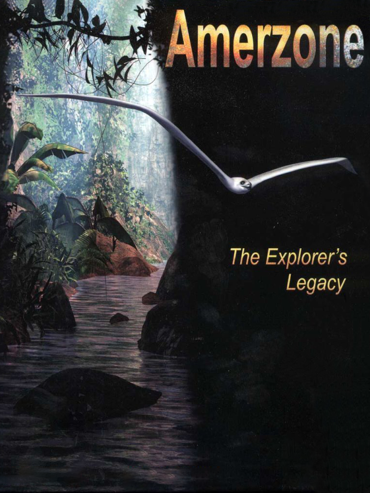

Amerzone: The Explorer’s Legacy (1999)
Amerzone: The Explorer’s Legacy (1999)
Detalhes
 |
|
| Tempo de jogo | Não Jogado |
| Última Atividade | Nunca |
| Adicionado | 07/06/2026 0:35:51 |
| Modificado | 07/06/2026 0:43:26 |
| Status de Conclusão | Not Played |
| Biblioteca | Steam |
| Fonte | Steam |
| Plataforma | PC (Windows) |
| Data de Lançamento | 18/03/1999 |
| Pontuação da Comunidade | 69 |
| Avaliação da crítica | 90 |
| Pontuação do Usuário | |
| Gênero | Adventure Point-and-click Puzzle |
| Desenvolvedor | Virtual Studio |
| Editor | Anuman Interactive Microïds |
| Funções | Single Player |
| Links | Steam Wikipedia GOG App Store (iPad) Twitch App Store (iPhone) |
| Tag | |
Descrição

From the creator of the Syberia series, experience Benoit Sokal's first adventure game masterpiece.
In 1932, Alexandre Valembois was a young explorer who, with his native friend Antonio Álvarez, wanted to make a name for himself by exploring the mysterious Amerzone region. Befriended by the natives of the region, he witnessed a strange ritual involving a giant egg of the famed white birds. Wanting to prove that the white birds existed, Alexandre betrayed the natives' trust and stole the mysterious egg. Alas, upon his returning to France, nobody believed Alexandre or his journals about the Amerzone.
Sixty years have passed, and the world has changed. World War II has come and gone, the Amerzone remains unexplored and closed off to outsiders by its despotic leader, Antonio Álvarez. Monsieur Alexandre Valembois is an old man at the end of his life, living alone in a lighthouse and wishing to fix his mistake. This is when, a young reporter pays a visit to the old Alexandre Valembois regarding his adventures...
Can you unravel the mystery of the white birds?